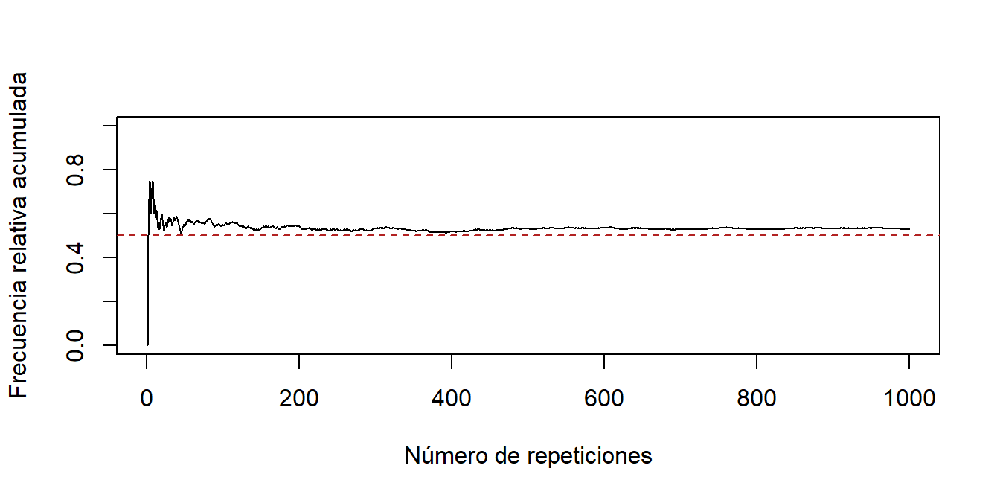

Capítulo 1 Probabilidad y Experimentos aleatorios
1.1 Introducción
La probabilidad proporciona un lenguaje para describir el azar y la incertidumbre. En biología, bioestadística y ciencias de la salud permite formular con claridad preguntas sobre la respuesta a un tratamiento, la presencia de una variante genética o el resultado de una prueba diagnóstica. En esta unidad estudiaremos sucesos, probabilidades, condicionamiento, independencia y algunas reglas de cálculo que servirán más adelante como base para la inferencia estadística.
Por ejemplo, podemos llamar \(R=\{\text{el paciente responde al tratamiento}\}\) al suceso «respuesta al tratamiento» y \(V=\{\text{el individuo es portador de una determinada variante genética}\}\) al suceso «portador de la variante». Más adelante podremos combinar estos y otros sucesos para formular preguntas más interesantes. Para introducir estas ideas formalmente comenzaremos, sin embargo, con un experimento especialmente sencillo: el lanzamiento de un dado de seis caras.
1.1.1 Fenómenos deterministas y fenómenos aleatorios
Supongamos que disponemos de un dado regular con todas las caras pintadas de blanco y con un número, que irá de 1 a 6 sin repetir ninguno, en cada una de las seis caras.
Definamos los dos experimentos siguientes: Experimento 1: Tirar el dado y anotar el color de la cara resultante. Experimento 2: Tirar el dado y anotar el número de la cara resultante. ¿Qué diferencia fundamental observamos entre ambos experimentos? Muy simple! En el experimento 1, el resultado es obvio: saldrá una cara de color blanco. Es decir, es posible predecir el resultado. Se trata de un experimento o fenómeno determinista.
En cambio, en el experimento 2 no podemos predecir cuál será el valor resultante. El resultado puede ser : \(1,2,3,4,5\) o 6 . Se trata de un experimento o fenómeno aleatorio.
El conjunto de resultados se anotará con el símbolo: \(\Omega\). En este caso, \(\Omega=\{1,2,3,4,5,6\}\). Si repetimos muchas veces un mismo experimento aleatorio en las mismas condiciones, la frecuencia relativa con que ocurre un suceso tiende a estabilizarse alrededor de un determinado valor. Esta propiedad proporciona una interpretación intuitiva de la probabilidad y se estudiará con más detalle posteriormente.
1.1.2 Sucesos
Supongamos que se ejecuta un experimento aleatorio. Se nos puede ocurrir emitir un enunciado que, una vez realizada la experiencia, pueda decirse si se ha verificado o no se ha verificado. A dichos enunciados los denominamos sucesos.
Por otro lado, los sucesos van asociados a subconjuntos del conjunto de resultados. Cada suceso se corresponderá exactamente con uno, y sólo con un, subconjunto del conjunto de resultados.
Veamos un ejemplo: Experimento: Tirar un dado regular. Conjunto de resultados : \(\Omega=\{1,2,3,4,5,6\}\) Enunciado: Obtener múltiplo de 3. Subconjunto al que se asocia el enunciado: \(A=\{3,6\}\) Nos referiremos habitualmente al suceso A.
1.1.2.1 Sucesos y conjuntos
Al conjunto de resultados \(\Omega\), se le denomina suceso seguro. Al conjunto \(\varnothing\) (conjunto sin elementos), se le denomina suceso imposible. Al complementario del conjunto \(A\), que se anota \(A^c\), se le denomina suceso contrario o complementario de \(A\). A partir de dos sucesos \(A\) y \(B\), podemos formar los sucesos siguientes:
- A intersección B, que anotaremos como:
\[ A \cap B \]
- A unión B, que anotaremos como:
\[ A \cup B \]
A intersección B significa que se verifican a la vez \(A\) y \(B\). A unión B, significa que se verifica \(A\) o \(B\) ( se pueden verificar a la vez).
1.2 Función de probabilidad
Lógicamente, una vez tenemos un suceso, nos preocupa saber si hay muchas o pocas posibilidades de que al realizar la experiencia se haya verificado.
Por lo tanto, sería interesante el tener alguna función que midiera el grado de confianza a depositar en que se verifique el suceso.
A esta función la denominaremos función de probabilidad. Una probabilidad es una función \(P\) que asigna a cada suceso \(A\) un número \(P(A)\) entre 0 y 1, cumpliendo las propiedades que veremos a continuación.
En una formulación matemática más general, no siempre se consideran todos los subconjuntos de \(\Omega\), sino una determinada colección de sucesos denominada sigma-álgebra. Este nivel de formalización no será necesario en este curso.
La notación \(P(A)\) significará: probabilidad de que se verifique el suceso A . Pero claro, de funciones de probabilidad asociadas a priori a una experiencia aleatoria podrían haber muchas.
Lo que se hace para decir qué es y qué no es una función de probabilidad es construir una serie de propiedades (denominadas axiomas) que se exigirán a una función para poder ser catalogada como función de probabilidad.
Y, ¿cuáles son estos axiomas? Pues los siguientes:
Axioma 1: Para cualquier suceso A, la probabilidad debe ser mayor o igual que 0.
Axioma 2: La probabilidad del suceso seguro debe ser 1: \(P(\Omega)=1\).
Axioma 3: Para sucesos \(A_i\), de modo que cada par de sucesos no tengan ningún resultado común, se verifica que:
\[ P\left(\bigcup_{i=1}^{\infty} A_{i}\right)=\sum_{i=1}^{\infty} P\left(A_{i}\right) \]
De este modo, pueden haber muchas funciones de probabilidad que se podrían asociar con la experiencia.
El problema pasa entonces al investigador para decidir cual o cuales son las funciones de probabilidad más razonables asociadas con la experiencia que está manejando.
Idea clave. \(\Omega\) describe los resultados posibles; un suceso es un conjunto de resultados; y \(P\) asigna probabilidades a los sucesos.
1.2.1 ¿Diferentes funciones de probabilidad para una misma experiencia aleatoria?
Supongamos la experiencia de tirar un dado regular. A todo el mundo se le ocurriría pensar que la función de probabilidad se obtiene de contar el número de resultados que contiene el suceso dividido por 6 , que es el número total de resultados posibles. Así pues, la probabilidad de obtener un múltiplo de 3 sería igual a \(2 / 6\), la probabilidad de obtener el número 2 sería \(1 / 6\) i la probabilidad de obtener un número par sería 3/6. Es decir, parece inmediato construir la función de probabilidad que, además, parece única. A nadie se le ocurre decir, por ejemplo, que la probabilidad de obtener un número par es \(5 / 6\) !
En este caso, todo ha sido muy fácil. Hemos visto que existe una única función de probabilidad que encaje de forma lógica con la experiencia y, además, ha sido muy sencillo encontrarla.
Pero esto, por desgracia, no siempre es así. En muchísimas ocasiones resulta muy complejo el decidir cuál es la función de probabilidad.
En el tema de variables aleatorias y de función de distribución se explica el problema de la modelización de muchas situaciones reales.
1.3 ¿Cómo se calculan las probabilidades?
No siempre es fácil conocer los valores de la función de probabilidad de todos los sucesos. Sin embargo, muchas veces se pueden conocer las probabilidades de algunos de estos sucesos. Con la ayuda de ciertas propiedades que se deducen de manera inmediata a partir de la axiomática es posible calcular las probabilidades de más sucesos.
Por otro lado, en caso de que el número de resultados sea finito y de que todos los resultados tengan las mismas posibilidades de verificarse, la probabilidad de un suceso cualquiera se puede calcular a partir de la regla de Laplace:
Si A es un suceso :
\[ \text { Probabilidad }(A)=\frac{\text { Número de casos favorables }}{\text { Número de casos posibles }} \]
donde: Número de casos favorables \(=\) Número de resultados contenidos en \(\mathrm{A}(\) cardinal de A\()\) Número de casos posibles \(=\) Número total de resultados posibles (cardinal del conjunto total de resultados)
En este caso, el contar número de resultados, ya sean favorables o posibles, debe hacerse por medio de la combinatoria.
Veamos con unos ejemplos muy sencillos y visuales cómo se obtienen y qué representan los casos posibles y los casos favorables.
También es posible obtener de manera aproximada la probabilidad de un suceso si se puede repetir muchas veces la experiencia: la probabilidad del suceso sería el valor al que tendería la frecuencia relativa del suceso. Podéis consultar más detalles acerca de esta aproximación.
En este caso, la cuestión estriba en poder hacer muchas veces la experiencia en condiciones independientes.
1.4 Sucesos elementales y sucesos observables
En el contexto de la probabilidad conviene distinguir los resultados elementales, que son los elementos de \(\Omega\), de los sucesos que podemos distinguir según la información disponible. En un dado ordinario podemos observar cada número; si el modo de observación es más limitado, algunos subconjuntos dejan de poder distinguirse directamente.
Ejemplo
Podemos imaginar un dado en el que pintamos de blanco las caras pares y de negro las impares. En este caso los sucesos elementales serían los habituales 1, 2, 3,…6. Sin embargo tan solo “Par” (“blanco”) o impar (“negro”) se pueden observar.
Si repintamos el dado de forma que las caras 1 y 2 esten blancas, las 3 y 4, azules y las 5 y 6 rojas podremos observar el suceso “Sale 1 o 2 (=Sale blanco)” o “sale blanco o azul”, pero no el suceso “sale par” dado que cada color contiene un número par y uno impar
En el dado pintado con tres colores, por ejemplo, podemos distinguir los colores y sus agrupaciones, pero no necesariamente el suceso «sale par» si cada color reúne una cara par y una impar. El ejemplo muestra que los sucesos que podemos formular dependen de la información disponible al observar el experimento.
1.5 Propiedades inmediatas de la probabilidad
Veremos a continuación una serie de propiedades que se deducen de manera inmediata de la axiomática de la probabilidad.
1.5.1 Suceso imposible
El suceso imposible se identifica con el conjunto vacío, puesto que no hay ningún resultado asociado a él. La probabilidad del suceso imposible es:
\[ P(\varnothing)=0 \]
1.5.2 Suceso implicado
Decimos que un suceso \(B\) está implicado por otro suceso \(A\) si siempre que se presenta \(A\), también lo hace \(B\). Por ejemplo, si al tirar un dado se obtiene un dos, ello implica que ha salido un número par. En términos de conjuntos, \(A\) está contenido en \(B\) (todos los resultados de \(A\) también pertenecen a B ), por lo que:
\[ P(A) \leq P(B) \]
1.5.3 Complementario de un suceso
Sea \(A^c\) el suceso formado por todos los elementos de \(\Omega\) que no pertenecen a \(A\) (suceso complementario de \(A\)). La probabilidad de dicho suceso es igual a:
\[ P(A^c)=1-P(A) \]
1.5.4 Ocurrencia de algun suceso
La probabilidad de la unión de dos sucesos A y B es igual a:
\[ P(A \cup B)=P(A)+P(B)-P(A \cap B) \]
1.5.5 Probabilidad de que ocurra algun suceso
Si tenemos una colección de \(k\) sucesos, la probabilidad de la unión de dichos sucesos será:
\[ P\left(\bigcup_{i=1}^{k} A_i\right)=\sum_{r=1}^{k}(-1)^{r+1} \sum_{1\leq i_1<\cdots<i_r\leq k}P(A_{i_1}\cap\cdots\cap A_{i_r}). \]
Example 1.1 Ejemplo. Al lanzar un dado, sea \(A=\{2,4,6\}\) («sale par») y \(B=\{4,5,6\}\) («sale al menos 4»). Entonces \(A^c=\{1,3,5\}\), \(A\cap B=\{4,6\}\) y \(A\cup B=\{2,4,5,6\}\). Por tanto, \(P(A\cup B)=4/6=3/6+3/6-2/6\), que verifica inclusión-exclusión.
1.5.6 Probabilidad de que ocurran dos (o más) sucesos a la vez
Para \(P(B)>0\), la regla del producto da siempre
\[ P(A\cap B)=P(A\mid B)P(B). \]
Para varios sucesos se aplica sucesivamente, siempre que las condicionales estén definidas. Si los sucesos son independientes, esta expresión se simplifica a \(P(A\cap B)=P(A)P(B)\).
Además, la desigualdad de Bonferroni proporciona una cota inferior:
\[ P\left(\bigcap_{i=1}^{n} A_i\right) \geq 1-\sum_{i=1}^{n} P(A_i^c). \]
El lado derecho puede ser negativo; como una probabilidad nunca lo es, la cota útil puede truncarse en cero. El conjunto de resultados, los sucesos y la función \(P\) constituyen el modelo probabilístico con el que trabajaremos.
1.6 Probabilidad condicionada
Imaginemos que en la experiencia de tirar un dado regular supiéramos de antemano que se ha obtenido un número par. Es decir, que se ha verificado el suceso: \(\{B = \mbox{número par}\}\)“.
Pregunta: ¿Cuál es ahora la probabilidad de que se verifique el suceso mayor o igual a cuatro? Lógicamente, el resultado sería : \(2 / 3\). Por lo tanto, la probabilidad del suceso \(\mathrm{A}=\) mayor o igual a cuatro se ha modificado. Evidentemente, ha pasado de ser \(1 / 2\) ( cuando no tenemos ninguna información previa) a ser \(2 / 3\) (cuando sabemos que se ha verificado el suceso B). ¿Cómo podemos anotar esta última probabilidad \((2 / 3)\) ? Muy sencillo. Anotaremos \(P(A\mid B)\), que se lee como probabilidad de \(A\) condicionada a B . Así, en este ejemplo,
\[ \begin{gathered} P(A\mid B)=2 / 3 \\ P(A)=1 / 2 \end{gathered} \]
En términos generales, si \(P(B)>0\), definimos la probabilidad condicionada como:
\[ P(A\mid B)=\frac{P(A \cap B)}{P(B)}. \]
Atención. La condición \(P(B)>0\) es esencial: no se define \(P(A\mid B)\) dividiendo por un suceso condicionante de probabilidad cero.
El explorador interactivo que se encuentra a continuación (disponible en la versión HTML del documento) permite visualizar de una manera práctica el ejemplo anterior.
Siguiendo con la notación utilizada, el suceso A será lo que denominamos suceso de obtención, mientras que el suceso B será lo que denominamos suceso condicionante. La pantalla nos proporcionará los casos posibles para el condicionante elegido y los casos favorables, calculando mediante la regla de Laplace la probabilidad del suceso.
- Elegid suceso a estudiar. Desplazad, si procede, las barras de selección.
- Elegir suceso condicionante. Desplazad, si procede, las barras de selección..
- Comprobad los sucesos posibles y los favorables y las probabilidades resultantes.
Probabilidad condicionada – simulador interactivo 🎲
Elige los sucesos A y B para el experimento de lanzar un dado.
A: número mayor o igual que
B: número par entre un mínimo y un máximo.
1.6.1 La probabilidad condicionada es una medida de probabilidad
Para un \(B\) fijo con \(P(B)>0\), la aplicación \(P_B(A)=P(A\mid B)\) verifica los tres axiomas de una probabilidad:
Axioma 1:
\[ P(A\mid B) \geq 0 \]
Axioma 2:
\[ P(\Omega\mid B)=1 \]
Axioma 3:
\[ P\left(\bigcup_{i=1}^{\infty} A_i\mid B\right)=\sum_{i=1}^{\infty} P(A_i\mid B) \]
para sucesos \(\mathrm{A}_{\mathrm{i}}\) con intersección vacía dos a dos.
1.6.2 Sucesos dependientes y sucesos independientes
Dos sucesos \(A\) y \(B\) son independientes cuando
\[ P(A\cap B)=P(A)P(B). \]
Cuando \(P(B)>0\), esto equivale a \(P(A\mid B)=P(A)\) (y simétricamente si \(P(A)>0\)). En el ejemplo anterior los sucesos son dependientes. La dependencia probabilística no implica por sí misma una relación causal.
Se verifica también que si A y B son independientes: a) El complementario del suceso A y el suceso B son independientes. b) El complementario del suceso A y el complementario del suceso B son independientes. c) El complementario del suceso B y el suceso A son independientes.
1.6.3 Incompatibilidad e independencia
Dos sucesos con intersección vacía se denominan sucesos incompatibles. Esto, ¿qué implica? Pues, que si se verifica uno seguro que no se verifica el otro, ya que no tienen resultados en común. Por lo tanto es el caso extremo de dependencia. Obtenemos en este caso que:
\[ \mathrm{P}(\mathrm{A} / \mathrm{B})=0 \]
y, en consecuencia, si \(\mathrm{P}(\mathrm{A})\) y \(\mathrm{P}(\mathrm{B})\) son diferentes de cero, la probabilidad condicionada anterior es diferente de \(\mathrm{P}(\mathrm{A})\), y así se deduce la dependencia.
La única posibilidad de que se dé incompatibilidad e independencia a la vez, es que alguno de los dos sucesos tenga probabilidad igual a cero.
1.7 Regla del producto, probabilidad total y Bayes
1.7.1 Teorema de las probabilidades totales
Sea \(\{H_1,\ldots,H_n\}\) una partición de \(\Omega\): sus sucesos son dos a dos disjuntos, su unión es \(\Omega\) y \(P(H_i)>0\).
\[ \Omega=H_1\cup\cdots\cup H_n. \]
La probabilidad de cualquier otro suceso A , se puede obtener a partir de las probabilidades de los sucesos de la partición y de las probabilidades de A condicionado a los sucesos de la partición, de la manera siguiente:
\[ P(A)=\sum_{i=1}^{n} P(A\mid H_i)P(H_i). \]
Esto es lo que se conoce como teorema de las probabilidades totales.
1.7.2 Teorema de Bayes
Es una consecuencia de la regla del producto y del teorema de las probabilidades totales. Para la misma partición, si \(P(A)>0\),
Ahora el interés se centrará en la obtención de la probabilidad de cualquier suceso de la partición condicionada a un suceso A cualquiera.
El resultado será:
\[ P(H_i\mid A)=\frac{P(A\mid H_i)P(H_i)}{P(A)} =\frac{P(A\mid H_i)P(H_i)}{\sum_{j=1}^{n}P(A\mid H_j)P(H_j)}. \]
Esto es conocido como teorema o regla de Bayes.
Ejemplo. Una urna procede de la máquina \(H_1\) con probabilidad \(0,6\) o de \(H_2\) con probabilidad \(0,4\). La probabilidad de una bola roja es \(0,2\) en \(H_1\) y \(0,5\) en \(H_2\). Por probabilidad total, \(P(\text{roja})=0,2\cdot0,6+0,5\cdot0,4=0,32\). Tras observar una bola roja, Bayes da \(P(H_2\mid\text{roja})=0,5\cdot0,4/0,32=0,625\): se actualiza la probabilidad a priori \(0,4\) a la probabilidad a posteriori \(0,625\).
1.8 Introducción a los experimentos múltiples
Supongamos que tiramos a la vez un dado y una moneda. Tenemos una experiencia múltiple, puesto que la experiencia que se realiza es la composición de dos experiencias (experiencia \(1=\) tirar un dado regular; experiencia 2 = tirar una moneda regular). ¿Cuál es en este caso el conjunto de resultados? Si \(\Omega_{1}\) es el conjunto de resultados asociado con la experiencia tirar un dado y \(\Omega_{2}\) es el conjunto de resultados asociado con la experiencia tirar una moneda, el conjunto de resultados asociado a la experiencia múltiple será \(\Omega_{1} \times \Omega_{2}\).
Es decir, \(\Omega_{1}=\{1,2,3,4,5,6\}\) \(\Omega_{2}=\{\) cara, cruz \(\}\) \(\Omega_{1} \times \Omega_{2}=\{(1\), cara \(),(2\), cara \(),(3\), cara \(),(4\), cara \(),(5\), cara \(),(6\), cara \(),(1\), cruz ), ( 2 , cruz ), ( 3, cruz ), (4, cruz \(),(5\), cruz \(),(6\), cruz \()\}\)
El producto \(\Omega_1\times\Omega_2\) describe el espacio producto, pero todavía no especifica su distribución conjunta \(P\). De esta se obtienen las distribuciones marginales \(P_1\) y \(P_2\); las marginales no determinan en general la distribución conjunta.
Para sucesos rectangulares \(A\times B\), la regla general es \(P(A\times B)=P(B\mid A)P(A)\), cuando la condicional esté definida. En el caso independiente se simplifica a:
- Caso de experiencias independientes:
\[ P(A\times B)=P_1(A)P_2(B). \]
Esto que hemos explicado se puede, lógicamente, generalizar a una experiencia múltiple formada por \(n\) experiencias.
1.9 Combinatoria
Veamos algunas fórmulas simples que se utilizan en combinatoria y que nos pueden ayudar a calcular el número de casos posibles o el número de casos favorables.
La regla de Laplace basada en recuentos solo es aplicable cuando los resultados elementales que se cuentan son equiprobables.
| ¿Importa el orden? | ¿Se permite repetición? | Recuento |
|---|---|---|
| Sí | No | Variaciones \(V_n^r\) |
| Sí | Sí | Variaciones con repetición \(RV_n^r\) |
| No | No | Combinaciones \(C_n^r\) |
1.9.1 Permutaciones
Sea un conjunto de \(n\) elementos. A las ordenaciones que se pueden hacer con estos \(n\) elementos sin repetir ningún elemento y utilizándolos todos se las denomina permutaciones. El número de permutaciones que se pueden realizar coincide con el factorial de \(n\), y su cálculo es:
\[ n!=n \cdot(n-1) \cdot(n-2) \ldots \ldots .2 \cdot 1 \]
Ejemplo:
¿De cuántas maneras distintas podemos alinear a seis personas en una fila?
Respuesta
De \(6!=6 \cdot 5 \cdot 4 \cdot 3 \cdot 2 \cdot 1=720\) maneras (permutaciones de 6 elementos).
1.9.2 Variaciones
Sea un conjunto de \(n\) elementos. Supongamos que deseamos ordenar \(r\) elementos de entre los \(n\). A cada una de estas ordenaciones la denominamos variación. Para \(0\leq r\leq n\), el número de variaciones que se pueden hacer de los \(n\) elementos tomados de \(r\) en \(r\) es:
\[ V_{n}^{r}=n \cdot(n-1) \ldots \ldots(n-r+1) \]
Ejemplo
En una carrera de velocidad compiten diez atletas. ¿De cuántas maneras distintas podría estar formado el podio? (el podio lo forman el primer, el segundo y el tercer clasificado)
Respuesta
Cada podio posible es una variación de diez elementos tomado de tres en tres. Por tanto, el número posible de podios es:
\[ V_{10}^{3}=10\cdot9\cdot8=720 \]
1.9.3 Variaciones con repetición
Sea un conjunto de \(n\) elementos. Supongamos que se trata de ordenar \(r\) elementos que pueden estar repetidos. Cada ordenación es una variación con repetición. El número de variaciones con repetición para un conjunto de \(n\) tomados de \(r\) en \(r\) es :
\[ \mathrm{RV}_{\mathrm{n}}^{\mathrm{r}}=\mathrm{n}^{\mathrm{r}} \]
Ejemplo
En una urna tenemos cinco bolas numeradas del 1 al 5 . Se extraen tres bolas sucesivamente con reposición (devolviendo cada vez la bola a la urna). ¿Cuántos resultados distintos es posible obtener?
Respuesta: Se trata de variaciones con repetición de un conjunto de cinco bolas tomadas de tres en tres. En total tendremos:
\[ \mathrm{RV}_{5}^{3}=5^{3}=125 \]
1.9.4 Combinaciones
Cuando se trata de contar el número de subconjuntos de \(r\) elementos en un conjunto de \(n\) elementos tenemos lo que se denomina combinaciones de \(r\) elementos en un conjunto de \(n\). Para \(0\leq r\leq n\), el cálculo se hace mediante el número combinatorio, de la manera siguiente:
\[ C_n^r=\binom{n}{r}=\frac{n!}{r!(n-r)!} \]
Ejemplo
¿De cuántas maneras podemos elegir, en la urna anterior (recordemos que había cinco bolas), tres bolas en una única extracción?
Respuesta
Serán combinaciones de cinco elementos tomados de tres en tres, por tanto, tendremos:
\[ C_5^3=\binom{5}{3}=\frac{5!}{3!(5-3)!}=10 \]
1.9.5 Permutaciones con repetición
Sea un conjunto de \(n\) elementos, de entre los cuales tenemos \(a\) elementos indistinguibles entre sí, \(b\) elementos indistinguibles entre sí, \(c\) elementos indistinguibles entre sí, etc., con \(a+b+c+\cdots=n\). Cada ordenación de estos elementos se denominará permutación con repetición. El número de permutaciones con repetición es:
\[ RP_n^{a,b,c,\ldots}=\frac{n!}{a!b!c!\cdots} \]
Ejemplo
¿Cuantas palabras con sentido o sin él pueden formarse con las letras PATATA?
Respuesta: Tenemos tres veces la letra A, dos veces la T y una vez la P. Por tanto, serán:
\[ RP_6^{3,2,1}=\frac{6!}{3!\,2!\,1!}=60 \]
1.10 Frecuencia relativa y probabilidad
La definición moderna de probabilidad basada en la axiomática de Kolmogorov (presentada anteriormente) es relativamente reciente. Históricamente hubo otros intentos previos de definir el escurridizo concepto de probabilidad, descartados por diferentes razones. Sin embargo conviene destacar aquí algunas ideas que aparecen en la antigua definición basada en la frecuencia relativa, ya que permiten intuir algunas profundas propiedades de la probabilidad.
Recordemos antes que si en un experimento que se ha repetido \(n\) veces un determinado suceso A se ha observado en \(k\) de estas repeticiones, la frecuencia relativa \(\mathrm{f}_{\mathrm{r}}\) del suceso A es:
\[ f_r=k/n \]
El interés por la frecuencia relativa y su relación con el concepto de probabilidad aparece a lo largo de los siglos XVIII a XX al observar el comportamiento de numerosas repeticiones de experimentos reales.
A título de ejemplo de un experimento de este tipo, supongamos que se dispone de una moneda ideal perfectamente equilibrada. Aplicando directamente la regla de Laplace resulta claro que el suceso \(A=\) obtener cara tiene probabilidad:
\[ P(A)=1/2=0,5. \]
1.10.1 Ilustración por simulación
Mediante el enlace siguiente se accede a una simulación por ordenador de la ley de los grandes números en la que se basa precisamente la idea de asimilar “a la larga” (es decir a medida que crece el número de repeticiones) frecuencia relativa y probabilidad.
En la simulación podéis definir:
- La verdadera probabilidad” de que al tirar la moneda salga cara,
- EL número de tiradas.
Al aumentar el número de repeticiones, la frecuencia relativa tiende a estabilizarse alrededor de \(P(A)\). Esto no significa que se aproxime a \(P(A)\) de forma continua o monótona: seguirá presentando fluctuaciones aleatorias.
Eso sí, observad lo que sucede si fijáis probabilidades cercanas a 0,5 o muy alejadas de él.
¿La idea de lo que sucede a la larga es la misma? ¿En que encontráis diferencias?
Aunque no deje de llamar la atención el carácter errático del comportamiento de \(\mathrm{f}_{\mathrm{r}}\) entre los valores 0 y 1, estaréis seguramente de acuerdo que a mayor número de lanzamientos \(n\), más improbable es que \(f_{r}\) se aleje mucho de \(p(A)\).
En R. Esta simulación reproducible muestra una trayectoria de frecuencias acumuladas de una Bernoulli con \(p=0,5\); las fluctuaciones finitas no desaparecen de forma monótona.
set.seed(20260919)
n <- 1000
x <- rbinom(n, size = 1, prob = 0.5)
fr <- cumsum(x) / seq_len(n)
plot(seq_len(n), fr, type = "l", ylim = c(0, 1), xlab = "Número de repeticiones",
ylab = "Frecuencia relativa acumulada")
abline(h = 0.5, col = "firebrick", lty = 2)
La teoría moderna de la probabilidad enlaza formalmente estas ideas con el estudio de las leyes de los grandes números, que se discutirán con más detalle en el capítulo dedicado a las “Grandes muestras”.
1.11 Caso de Estudio: Eficacia de una prueba diagnóstica
Para decidir la presencia \(D\) o ausencia \(D^c\) de sordera profunda a la edad de seis meses, se está ensayando una batería de tests. Las cifras que siguen son datos didácticos para ilustrar los cálculos, no estimaciones atribuidas a una fuente concreta.
Considerando el caso en que la prueba pueda dar positivo \((+)\) o negativo \((-)\), hay que tener en cuenta que en individuos con dicha sordera la prueba dará a veces positivo y a veces negativo, e igual ocurrirá con individuos que no presentan la sordera.
En este contexto las probabilidades se interpretan en términos de resultados positivos o negativos, correctos o no, y reciben nombres habituales en la literatura médica:
Así tenemos:
-
\(P(+\mid D)\)
- Probabilidad de test positivo en individuos que padecen la sordera.
- Este valor se conoce como sensibilidad del test.
-
\(P(+\mid D^c)\)
- Probabilidad de test positivo en individuos que no padecen la sordera.
- Este valor se conoce como probabilidad de falso-positivo.
-
\(P(-\mid D)\)
- Probabilidad de test negativo en individuos que padecen la sordera
- Este valor se conoce como probabilidad de falso-negativo.
-
\(P(-\mid D^c)\)
- Probabilidad de test negativo en individuos que no padecen sordera.
- Este valor se conoce como especificidad del test.
Finalmente, a \(P(D)\) se le conoce como prevalencia.
No son cinco cantidades independientes: \(P(+\mid D^c)=1-\) especificidad (falso positivo) y \(P(-\mid D)=1-\) sensibilidad (falso negativo).
Lógicamente, en un “buen test” nos interesa que la sensibilidad y la especificidad sean elevadas, mientras que los falsos-positivos y falsos-negativos sean valores bajos.
Además no debemos olvidar que, el interés de aplicar el test, consiste en que sirva de elemento predictivo para diagnosticar la sordera.
Por lo tanto, interesa que las probabilidades:
\(P(D\mid +)=\) Probabilidad de padecer sordera si el test da positivo
\(P(D^c\mid -)=\) Probabilidad de no padecer sordera si el test da negativo
sean realmente altas.
A las probabilidades anteriores se las conoce como: valores predictivos del test, en concreto:
\(P(D\mid +)\) es el valor predictivo positivo y
\(P(D^c\mid -)\) es el valor predictivo negativo. Ambos dependen de la prevalencia.
Atención. Sensibilidad y especificidad condicionan al estado de salud; VPP y VPN condicionan al resultado del test. Por ello, VPP y VPN cambian al cambiar la prevalencia, incluso con la misma sensibilidad y especificidad.
1.11.1 Aplicación del Teorema de Bayes
Estamos en una situación en que, a partir de conocimiento de unas probabilidades, nos interesa calcular otras, para lo que utilizaremos el teorema de Bayes.
Habitualmente, a partir de estudios epidemiológicos y muestras experimentales, se estiman:
La prevalencia
La sensibilidad del test
La especificidad del test
La probabilidad de falso positivo
La probabilidad de falso negativo
¿Cómo se obtiene entonces el valor predictivo del test?
Veamos como aplicar el teorema de Bayes a este problema:
Si dividimos a la población global (en este caso, el conjunto de todos los bebés de seis meses) entre los que padecen sordera y los que no la padecen, aplicando el teorema de Bayes resulta que:
\[ P(D\mid +)=\frac{P(+\mid D)P(D)}{P(+\mid D)P(D)+P(+\mid D^c)P(D^c)} \] y
\[ P(D^c\mid -)=\frac{P(-\mid D^c)P(D^c)}{P(-\mid D^c)P(D^c)+P(-\mid D)P(D)}. \]
1.11.2 Ejemplo numérico
Supongamos que en el ejemplo de la sordera, se sabe que:
Prevalencia \(=0,003\), Es decir, que un tres por mil padece sordera profunda a esta edad.
Sensibilidad \(=0,98\)
Especificidad \(=0,95\)
Probabilidad de falso positivo \(=0,05\)
Probabilidad de falso negativo \(=0,02\)
¿Cuál es el valor predictivo del test?
\[ \begin{aligned} & P(D\mid +)=\frac{0,98 \times 0,003}{0,98 \times 0,003+0,05 \times 0,997}=0,055692 \\ & P(D^c\mid -)=\frac{0,95 \times 0,997}{0,95 \times 0,997+0,02 \times 0,003}=0,999936 \end{aligned} \]
En conclusión, Con la prevalencia supuesta, un resultado negativo se asocia a un VPN muy alto.
Con esa misma prevalencia, el VPP es bajo: un positivo por sí solo no confirma la sordera y debe interpretarse en el contexto clínico y, si procede, con una prueba confirmatoria.
Si se mantienen sensibilidad \(0,98\) y especificidad \(0,95\), pero la prevalencia aumenta a \(0,03\), entonces \(P(D\mid +)=0,98\cdot0,03/(0,98\cdot0,03+0,05\cdot0,97)\approx0,378\). El VPP aumenta de forma notable únicamente por cambiar la prevalencia.
Obsérvese que:
Probabilidad de falso positivo \(=1-\) especificidad
Probabilidad de falso negativo \(=1-\) sensibilidad